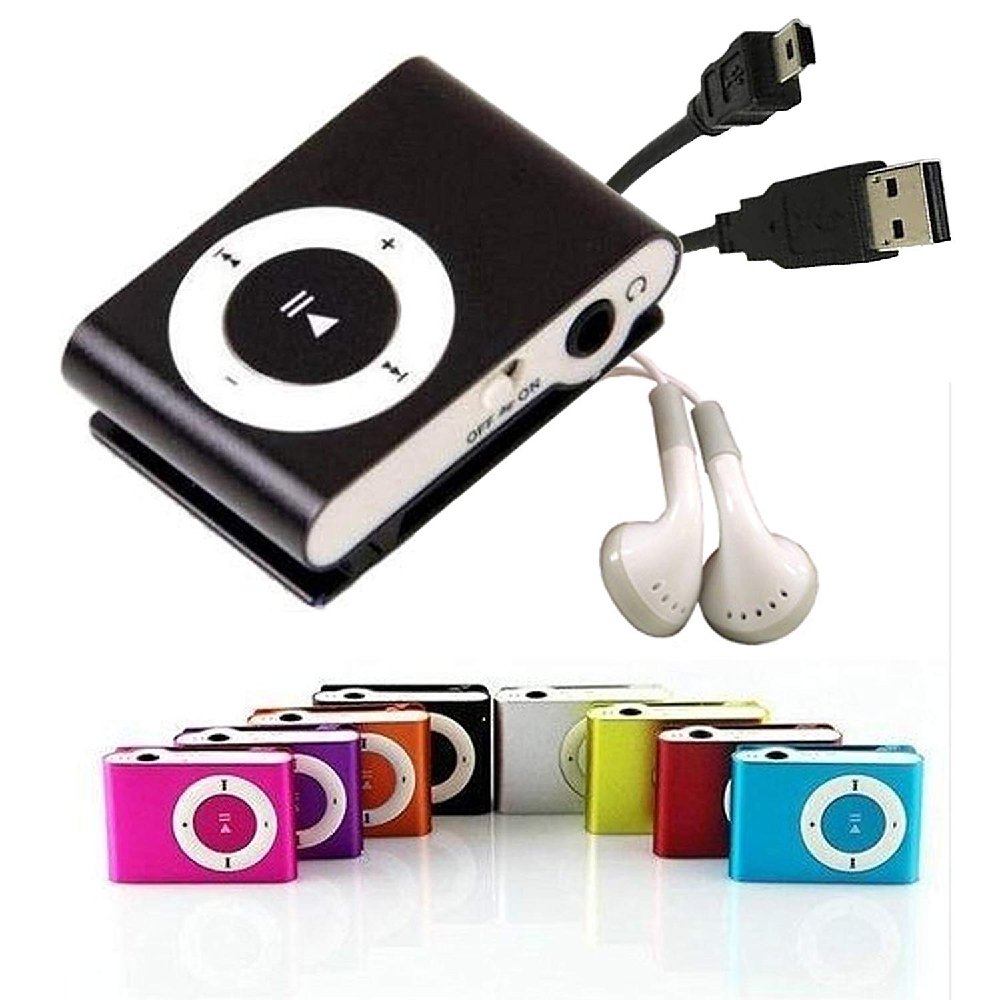
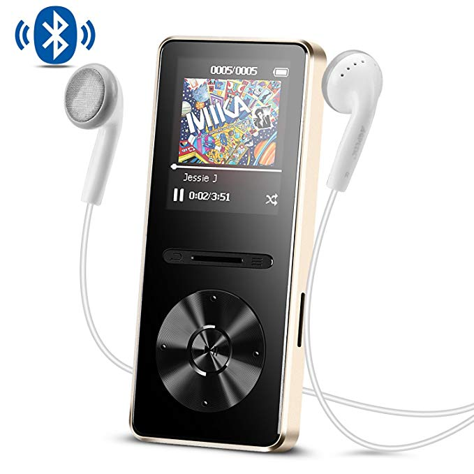

Comparativa de reproductores Mp3

| Mp3 mini | Mp3 grande |  |  | ||
|---|---|---|---|---|---|
| Capacidad de almacenamiento | 4gb(1.000 canciones) | 8gb(2.000 canciones) | 16gb(4.000 canciones) | 30gb(7.500 canciones) | 80gb(20.000 canciones) |
| Colores | |
||||
| Pantalla | No tiene | LCD 1.8 pulgadas | |||
| tiempos de carga | carga completa en 0.50 horas, hasta 6-8 horas reproducción de audio | carga completa en 1 - 1,5 horas, hasta 35 horas de reproducción de audio | |||